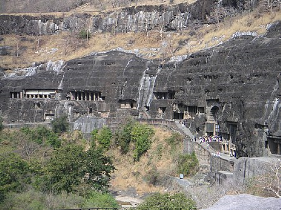

Ajanta Caves, Maharashtra
Located in Chhatrapati Sambhajinagar (formerly Aurangabad) district
of Maharashtra, the rock-cut caves in the village of Ajanta (or Ajintha)
house Buddhist, Jain, and Hindu caves. The beautiful wall paintings are the main
attraction for tourists. Carved in different time periods, the caves were initiated by the
Satvahana dynasty (230 BCE - 220 CE). Additional caves were added by the Vakataka
dynasty, Gupta empire, and others, depicting stories from
Panchatantra, Jataka tales, and Hindu mythology. There
are also Chaityas and Buddhist Viharas.
info Read more about Ajanta
Caves